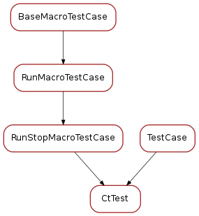

test_ct¶
Tests for ct macros
Classes
CtTest¶

-
class
CtTest(methodName='runTest')[source]¶ Test of ct macro. It verifies that macro ct can be executed. It inherits from RunStopMacroTestCase and from unittest.TestCase. It tests two executions of the ct macro with two different input parameters. Then it does another execution and it tests if the execution can be aborted.
-
test_ct_macro_runs_2()¶ Testing ct with macro_runs(macro_params=[‘.1’], macro_name=’ct’, wait_timeout=2.5)
-
test_ct_macro_runs()¶ Testing ct with macro_runs(macro_params=[‘.3’], macro_name=’ct’, wait_timeout=2.5)
-
test_ct_macro_stops()¶ Testing ct with macro_stops(macro_params=[‘1’], macro_name=’ct’, wait_timeout=3.5, stop_delay=0.1)
-